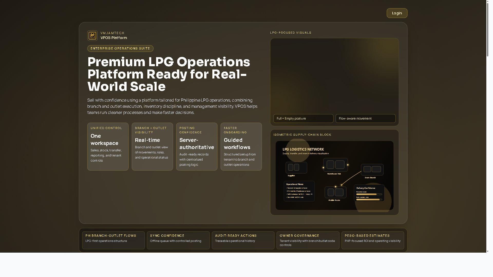
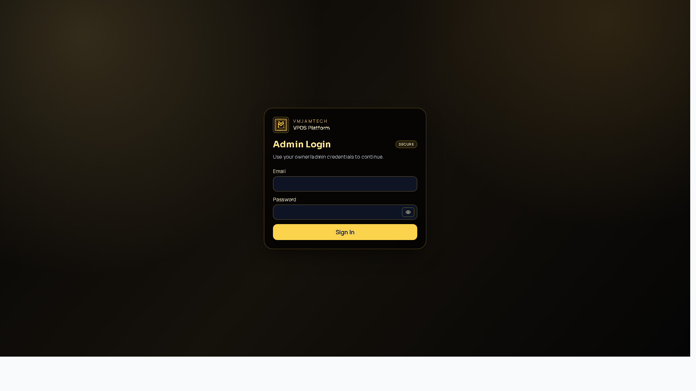
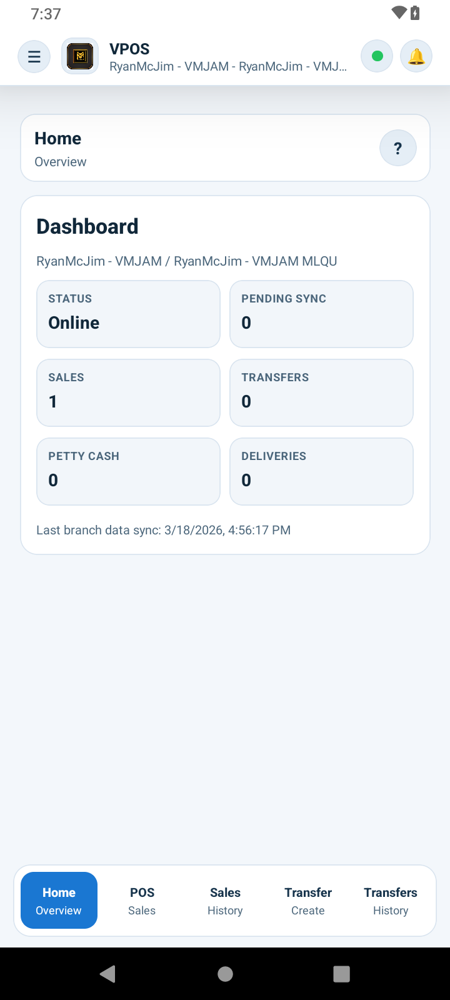

VPOS Live Web Capture
Landing PageCaptured from production URL for presentation use.

VPOS Live Web Capture
Login PageUse this in onboarding/security flow slides.

VPOS Live Mobile Capture
USB ADB Screen
This is a real capture from your connected Android device. For a full presentation set, repeat capture while navigating: Login, Branch Selection, POS, Sales List, Transfers, Settings.